Zona Gamer es un sitio dedicado a ofrecer contenido detallado sobre videojuegos de distintas generaciones. Aquí encontrarás sinopsis completas, análisis generales y recomendaciones de títulos que marcaron historia. La idea es que cada juego tenga información suficiente para que realmente entiendas de qué trata y si vale la pena jugarlo.

Plataformas: PS3, Xbox 360, PC
Duración: 6–8 horas
Raiden es un cyborg ninja que vive en un mundo donde las guerras son controladas por corporaciones privadas. A lo largo de su misión, deberá enfrentarse a enemigos cada vez más peligrosos mientras cuestiona su propia humanidad y su pasado como soldado. El sistema de combate es rápido, preciso y extremadamente violento, obligando al jugador a dominar cada mecánica. Además, el juego destaca por su increíble banda sonora (OST), que acompaña cada pelea con música épica que aumenta la intensidad. La combinación de acción, narrativa y música crea una experiencia única e inolvidable.

Plataformas: PS4, PS5, PC, Xbox Series X/S
Duración: 12–16 horas
Leon S. Kennedy es enviado a rescatar a la hija del presidente en una remota aldea europea. Lo que parece una misión simple se convierte rápidamente en una pesadilla cuando descubre que los habitantes están infectados por Las Plagas. A medida que avanza, deberá enfrentarse a cultos, criaturas mutadas y situaciones extremadamente peligrosas. La gestión de recursos y la toma de decisiones son clave para sobrevivir. Cada zona presenta nuevos desafíos, manteniendo la tensión constante. Es una experiencia intensa que mezcla acción y terror de manera perfecta.
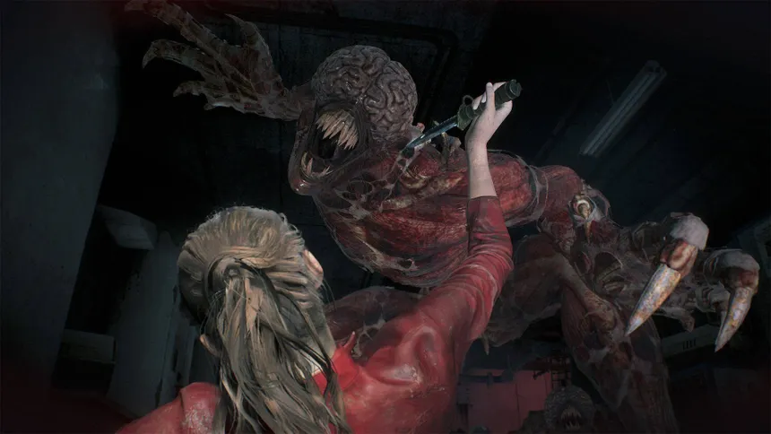
Plataformas: PS4, PS5, PC, Xbox One, Xbox Series X/S
Duración: 8–10 horas
En medio de un brote zombie que ha destruido Raccoon City, Leon y Claire deben encontrar la forma de sobrevivir. La ciudad está llena de peligros y cada rincón puede esconder una amenaza. A medida que avanzan, descubren los oscuros secretos de la corporación Umbrella. El jugador debe administrar recursos limitados y resolver situaciones bajo presión constante. La presencia de enemigos como Mr. X aumenta la tensión, ya que puede aparecer en cualquier momento. Es uno de los mejores ejemplos de survival horror moderno.
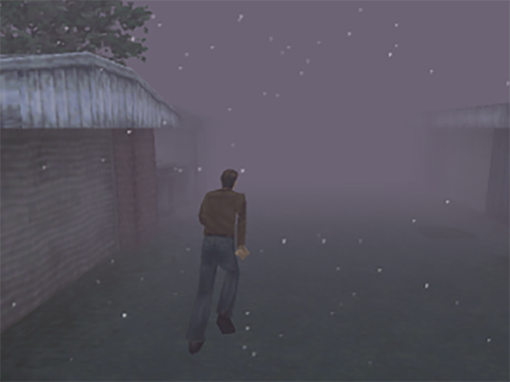
Plataformas: PS1
Duración: 6–8 horas
Harry Mason llega a Silent Hill en busca de su hija desaparecida tras un accidente. Sin embargo, el pueblo está envuelto en una niebla constante y lleno de criaturas extrañas. A medida que avanza, la realidad comienza a distorsionarse, mostrando versiones cada vez más perturbadoras del entorno. La historia se desarrolla lentamente, revelando secretos oscuros que afectan directamente al protagonista. El terror no solo está en los enemigos, sino en la atmósfera y la narrativa. Es un clásico que definió el género del terror psicológico.
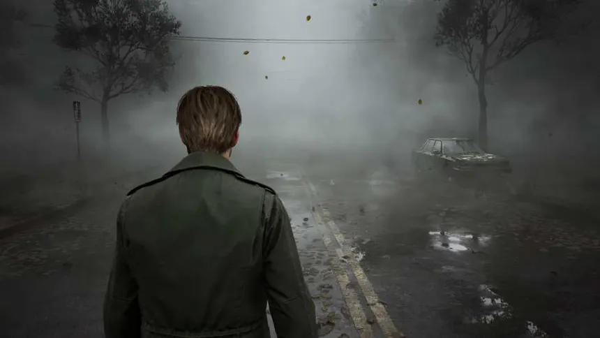
Plataformas: PS5, PC
Duración: 12–15 horas
James Sunderland recibe una carta de su esposa fallecida y decide viajar a Silent Hill. Allí encuentra un pueblo vacío cubierto de niebla, donde comienzan a aparecer criaturas que reflejan sus propios miedos. La historia se centra en temas emocionales y psicológicos, explorando la culpa y el dolor. Cada encuentro y escenario tiene un significado profundo dentro de la narrativa. A medida que avanza, el jugador descubre la verdad detrás de la carta. Es una experiencia intensa y reflexiva.
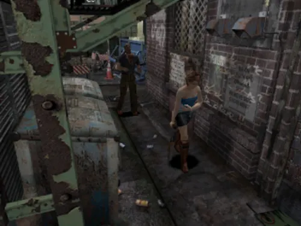
Plataformas: PS1, PC, GameCube
Duración: 6–7 horas
Jill Valentine intenta escapar de Raccoon City mientras el virus se propaga sin control. La ciudad está completamente devastada y llena de enemigos. Sin embargo, la mayor amenaza es Nemesis, una criatura que la persigue constantemente. El jugador debe reaccionar rápido y administrar recursos para sobrevivir. Cada encuentro con Nemesis genera tensión y obliga a tomar decisiones inmediatas. La experiencia es intensa y llena de momentos impredecibles.
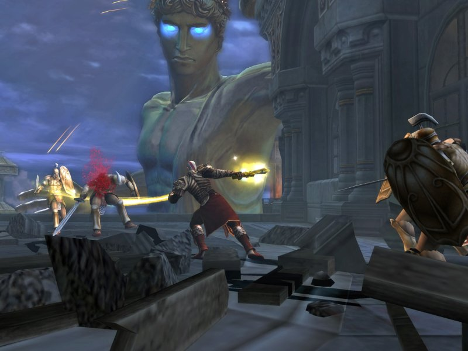
Plataformas: PS2, PS3
Duración: 10–12 horas
Kratos, tras convertirse en dios, es traicionado por Zeus y pierde sus poderes. Decidido a vengarse, inicia un viaje épico lleno de combates contra criaturas mitológicas. A lo largo del juego enfrentará desafíos enormes y enemigos colosales. La narrativa está cargada de violencia, traición y determinación. Cada batalla se siente intensa y cinematográfica. Es considerado uno de los mejores juegos de acción de su época.
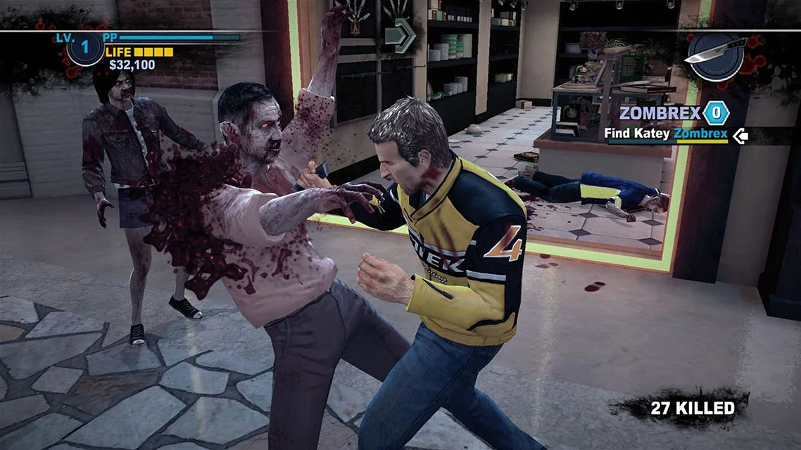
Plataformas: PS3, Xbox 360, PC
Duración: 10–15 horas
Chuck Greene participa en un programa donde se lucha contra zombies, pero un brote real desata el caos. Mientras intenta sobrevivir, debe proteger a su hija y encontrar medicación para ella. El juego combina acción, exploración y decisiones importantes. A lo largo del camino se enfrenta a psicópatas y hordas de enemigos. Su banda sonora (OST) acompaña perfectamente la acción, generando una mezcla única de tensión y humor oscuro. Es una experiencia diferente dentro del género.
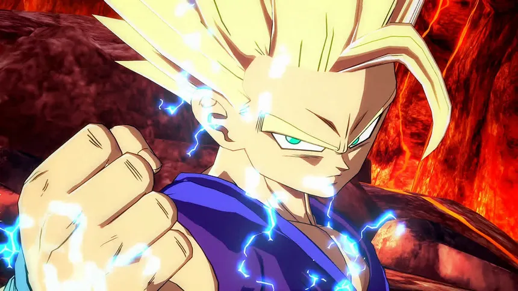
Plataformas: PS4, PS5, PC, Xbox One, Xbox Series X/S, Nintendo Switch
Duración: 8–12 horas (historia)
Los guerreros más poderosos del universo se enfrentan en combates intensos y espectaculares. La historia introduce una nueva amenaza que obliga a los personajes a unirse. El sistema de combate es dinámico y requiere estrategia. Cada pelea es rápida y visualmente impactante. Es un juego que captura perfectamente la esencia del anime. Ideal tanto para fans como para jugadores competitivos.
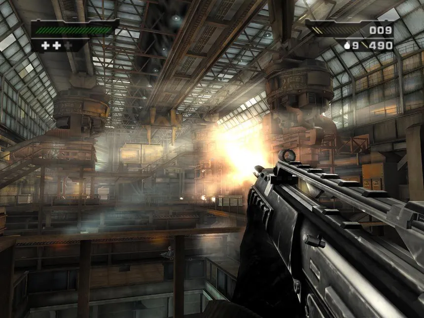
Plataformas: PS2, Xbox
Duración: 6–8 horas
Black es un shooter en primera persona que destaca por su enfoque en la acción explosiva. El jugador revive misiones a través de interrogatorios, revelando poco a poco la historia. Los escenarios son altamente destructibles, lo que aporta realismo a cada combate. Cada arma se siente potente y el sonido es clave en la experiencia. A medida que avanzas, los enfrentamientos se vuelven más intensos. Es un clásico del género.
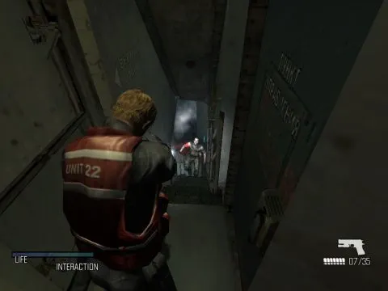
Plataformas: PS2, Xbox, PC
Duración: 6–8 horas
Tom Hansen es enviado a investigar un barco en medio de una tormenta. Al llegar, descubre que la tripulación ha sido infectada por una entidad desconocida. El entorno es inestable, con olas que afectan el movimiento del personaje. A medida que avanza, la historia revela experimentos oscuros. El jugador debe enfrentarse tanto a enemigos como al entorno. Es una mezcla interesante de acción y terror.
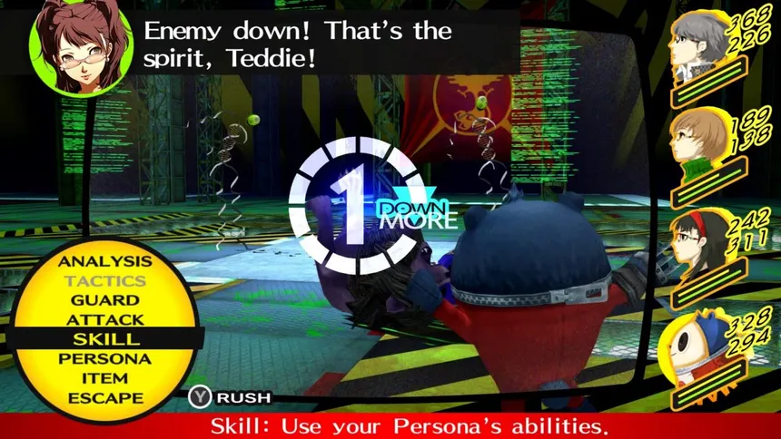
Género: RPG / Simulación social
Plataformas: PC, PS4, PS Vita
Duración: 60–80 horas
Sinopsis: En un tranquilo pueblo japonés llamado Inaba, comienzan a ocurrir una serie de misteriosos asesinatos relacionados con un canal de televisión que solo aparece en días de lluvia. El protagonista, junto a un grupo de amigos, descubre que puede entrar a ese mundo oculto donde se enfrentan a criaturas conocidas como Sombras. A medida que investigan los crímenes, también desarrollan vínculos personales que afectan directamente sus habilidades en combate. La historia combina vida escolar, relaciones sociales y elementos sobrenaturales de forma única. Su narrativa profunda y su excelente banda sonora (OST) lo convierten en uno de los RPG más queridos de todos los tiempos.
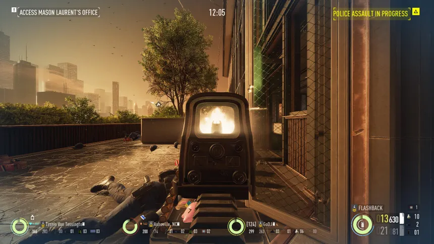
Género: Shooter cooperativo / Acción
Plataformas: PC, PS3, PS4, Xbox 360, Xbox One
Duración: 20+ horas (rejugable)
Sinopsis: Payday 2 pone al jugador en la piel de un criminal profesional que participa en robos organizados junto a un equipo. Desde atracos a bancos hasta misiones más complejas, cada golpe requiere planificación, coordinación y ejecución precisa. El juego permite afrontar las misiones de forma sigilosa o completamente agresiva, ofreciendo múltiples estilos de juego. A medida que avanzas, desbloqueas habilidades, armas y mejoras que cambian la forma de jugar. La experiencia se vuelve aún más intensa en modo cooperativo, donde la comunicación es clave para el éxito. Su jugabilidad dinámica y su constante actualización lo mantienen vigente incluso hoy en día.
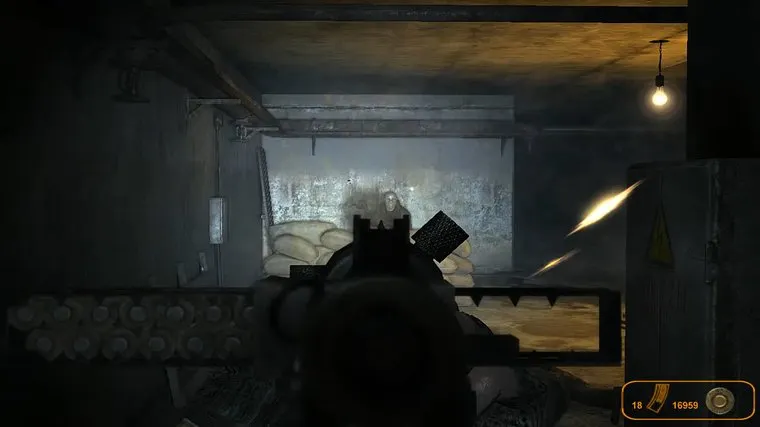
Plataformas: PC, Xbox 360, PS4 (Redux)
Duración: 8–12 horas
Sinopsis: Tras una guerra nuclear que devastó la superficie de la Tierra, los supervivientes de Moscú se refugian en los túneles del metro, creando una sociedad fragmentada en distintas facciones. Artyom, un joven que nunca ha salido al exterior, se ve envuelto en una misión crucial para advertir a otras estaciones sobre una amenaza desconocida conocida como los “Oscuros”. A medida que avanza por túneles oscuros, infestados de mutantes y peligros humanos, deberá enfrentarse tanto a criaturas deformadas por la radiación como a conflictos entre distintas ideologías. El viaje lo llevará a cuestionar la realidad del mundo en el que vive y descubrir verdades ocultas sobre la humanidad. Con una atmósfera opresiva, escasez de recursos y una narrativa profunda, Metro 2033 ofrece una experiencia intensa donde cada decisión puede significar la vida o la muerte.
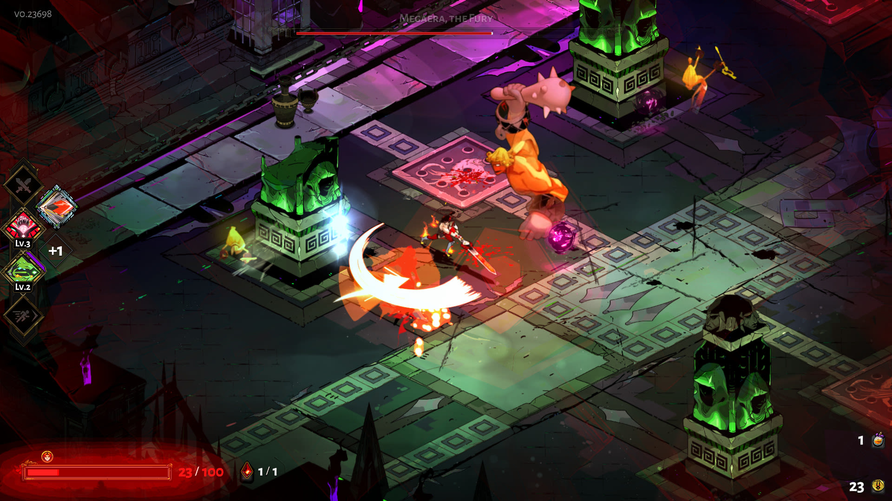
Plataformas: PC, PS4, PS5, Xbox One, Xbox Series X/S, Nintendo Switch
Duración: 20–30 horas (rejugable)
Sinopsis: Hades es un roguelike de acción donde el jugador controla a Zagreus, el hijo de Hades, quien intenta escapar del inframundo para llegar al Olimpo. Cada intento de escape es diferente, ya que los niveles se generan de forma procedural y ofrecen distintos desafíos, enemigos y recompensas. A lo largo de su travesía, Zagreus recibe la ayuda de los dioses del Olimpo, quienes le otorgan poderes especiales que modifican completamente el estilo de juego. Sin embargo, cada derrota lo devuelve al inicio, permitiéndole fortalecer habilidades y desbloquear nuevas mejoras. La narrativa se desarrolla progresivamente con cada intento, profundizando en las relaciones entre personajes y en la historia familiar del protagonista. Con un combate rápido, fluido y altamente estratégico, junto a una banda sonora destacada y un estilo artístico único, Hades logra combinar acción intensa con una narrativa envolvente que invita a jugar una y otra vez.